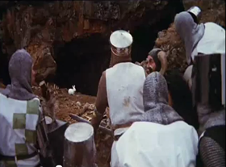
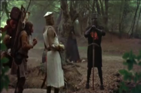
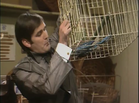
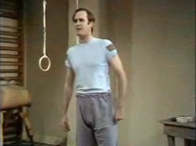
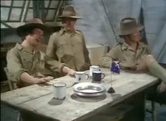
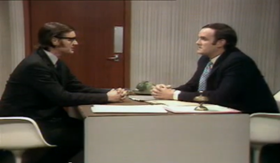

In this course we will learn about the different Monty Python Skits. Below are some of the skits you will learn about. Tap one of the skits to get started. At any time you will be able to return to the menu or tap on the menu button to go to a different skit.
The irresistible Oxbridge partnership of John Cleese, Eric Idle, Graham Chapman, Michael Palin and Terry Jones, mixed with the dazzlingly surreal artworks of American Terry Gilliam, celebrates four decades and 45 episodes of risqué silliness.
The comedy of Monty Python was streaks ahead of its time. Famous for its innovation and radical splendor, Python sketches broke the mould of building to a specific punchline, delivering some of the funniest and most enduring sketches of our lifetime.
In this course we will review some of the best sketches ever done my Monty Pything. Return to the menu or tap the next button to go to the next page.
Knights who say ni
Probably one of the most quoted from Monty Python and the Holy Grain are the Kinghts who say ni
Killer Bunny

Looks may be not what they seem to be. Watch out for sharp pointy teeth!
The Black Knight

In the spirit of never giving up! Tis only a flesh wound.
Spanish Inquisistion
Given how memorable the great Python sketches are its amazing how few are successfully quotable. That’s because invariably the sketches were far too lyrically dense to be contracted to single catchphrases. One exception to the rule is, “Nobody Expects the Spanish Inquisition!” which is enough to get tears rolling about the plethora of weapons the Inquisition has at its disposal..
The Ministry of Silly Walks
The versatility of Python is amazing, as are John Cleese’s legs on the evidence of this sketch. Hardly the most intellectually demanding of skits, it’s a tribute to the brilliance of the show that it can flutter between scintillating word play and slapstick silliness. Great physical comedy.
Dead Parrot

Undeniably the most popular and well known of the Monty Python sketches, and for good reason too. The dead parrot – or “resting” Norwegian Blue, depending on which comedian you believe rightly – deserves its place at the peak of this list. Quintessentially Python, Cleese’s ranting complaints are deftly sidestepped by Palin’s slippery shopkeeper. Quite how this sketch only came second in the UK in Channel 4′s 50 Greatest Comedy Moments to Little Britain is anyone’s guess. Pure comedy gold doesn’t get better than this.
The Lumberjack Song
The best Python song, barring perhaps Always Look On The Bright Side of Life, The Lumberjack Song is both eminently hum-able and achingly funny. Way before Eddie Izzard made cross-dressing cool as his executive transvestite, Python made it a topic of comedy.
Self Defense Against Fresh Fruit

Cleese delivers a knockout performance as the crazed Army instructor, helping his lackluster crew of misfits defend themselves from the dangers of passion fruit, bananas and other assorted fresh fruit.
The Bruces

Howlingly un-PC yet still terribly funny. for all non-poofters.
Argument Clinic

This is the best sketch Monty Python ever did. No it isn’t. Yes it is. No it isn’t.
The Funniest Joke in the World
The ultimate weapon to win the war and destroy the Nazis. The atom bomb? Nope, humour.